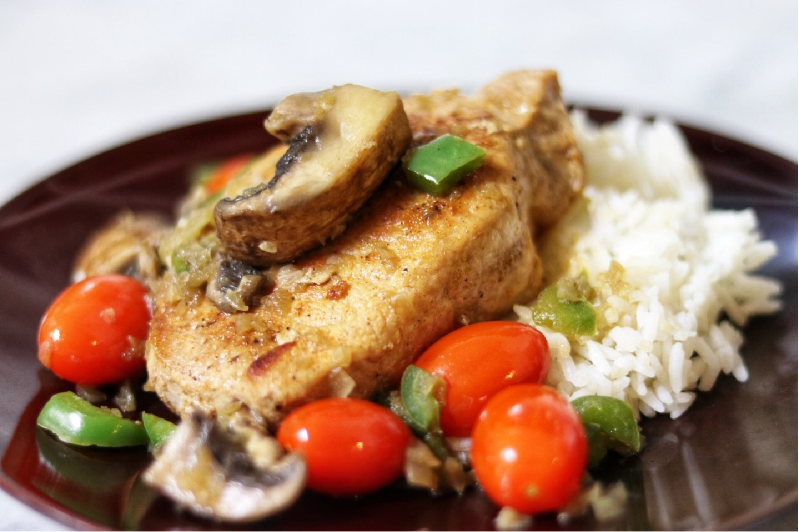

Pork Chop with Mushrooms and Grape Tomatoes

Description
This is a fairly quick and absolutely delicious way to have very juicy,
so-tender-you-can-cut-them-with-a-fork pork chops. I use boneless chops
that are 1 1/2 to 2 inches thick for this and keep the other sides simple;
it's great with baby red potatoes or rice. I happened to have really great
chops, and some fabulous veggies on hand so I kept the seasoning simple.
I used a rather strong Viognier for the wine, but you could use any good white.
Ingredients
- 4 (1 1/2 inches thick) boneless pork chops
- 1 pinch seasoned salt, or to taste
- 1 pinch lemon-pepper seasoning, or to taste
- 1 tablespoon olive oil
- 1 cup white wine, divided
- ½ cup water
- 1 cup oyster mushrooms, pulled apart but not chopped
- ½ green bell pepper, diced
- ½ small onion, minced
- 2 cloves garlic, minced
- ½ cup grape tomatoes
- 1 tablespoon butter
Steps
- Season pork chops with seasoned salt and lemon-pepper seasoning.
- Heat olive oil in a large skillet over medium-high heat. Add seasoned pork chops; cook until golden, 3 to 5 minutes per side. Pour 1/2 cup wine and water over the pork chops; bring to a simmer. Cook until chops are no longer pink in the center and most of the liquid has evaporated, 8 to 10 minutes. Transfer chops to serving plates.
- Stir oyster mushrooms, green bell pepper, onion, and garlic into the skillet. Increase heat to high and cook, stirring often, until onion softens and all the liquid evaporates, 3 to 5 minutes. Add remaining 1/2 cup wine, tomatoes, and butter. Cook and stir until heated through, 1 to 2 minutes.
- Serve mushroom and tomato mixture over pork chops.